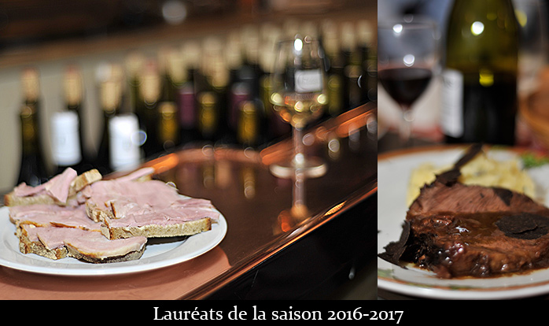

Les diplômés pour 2016/2017 sont:
Le P'tit Zinc
2, rue des Plantes, 75014 PARIS
Eric Mauboussin
Le Comptoir Voltaire
253, Boulevard Voltaire, 75011 PARIS
Christian Moisset
O'36
36, rue de Berry, 75008 PARIS
Didier Perreaut
La Tute
7 rue Rossini, 75009 PARIS
Emmanuel Maquaire
L'Envie du Jour
6 rue Nollet, 75017 PARIS
Sergio Lino
Le Verre à Vin
215 rue de Bercy, 75012 PARIS
Christophe Chenal et Rémy Demulder
Au Bougnat
26 rue Chanoinesse, 75004 PARIS
Julien Guillut